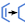

Calculate high-spin and low-spin states of transition metal complexes, exploring some or all of the possible states produced by Jaguar's transition metal initial guess code. Calculations can also be done on organic molecules and on complexes with more than one transition metal.
This panel enables you to generate spin states for transition metal complexes. It is primarily intended for complexes with a single metal, where the possible occupations of the d orbitals can be explored. You can search for the ground state, a specific spin state, or all spin states, either for the default initial guess of the orbital occupations, or for all occupations generated from the open d shell.
It is also possible to generate spin states for organic molecules. In this case, the unpaired electrons go into the lowest unoccupied molecular orbitals after the paired electrons have been assigned to orbitals.
For mononuclear transition metal complexes, you must assign formal charges to the metal center and the ligands so that the ligands are represented as closed-shell molecules. Assigning atomic formal charges helps Jaguar to construct initial guesses for metal complexes that sample different arrangements of electrons in the d orbitals of the metal center. The spin states facility was designed to sample only the open-shell character of the d orbitals, and requires the ligands to be closed shell. The formal charge on the entire complex is ignored: only the atomic formal charges are taken into account. The charge on the complex can of course be constructed from the atomic formal charges.
-
Ensure that all metal-ligand bonds are of zero order.
You can use the Decrement bond order button on the Build toolbar to do this.

-
Display formal charges on the atoms.
Choose Formal Charge from the Label All button menu on the Labels toolbar. Also ensure that Reapply when Workspace Changes is selected on the same button menu, so that the charge label is updated as you change it.

-
Set the formal charges on the ligand atoms and the metal atom.
You can use the Increment formal charge and Decrement formal charge buttons on the Build toolbar to do this.


You should consider the bonding as ionic, and make the ligands negative and the metal positive. For example, halogens should have a charge of −1, and the two nitrogens in a porphyrin that bond to the metal should have a charge of −1. The nitrosyl ligand would generally be treated as NO−, but may be treated as NO+ when studying solvation effects. The overall charge of the complex is reported in the status bar.
These classical atomic formal charge and closed shell ligand assignments are used simply to provide flexibility in the SCF initial guesses. They have no relation to the final converged wave functions, which can have any distribution of atomic charges and spins.
- Use structures from option menu
-
Choose the source of the structures for the current task.
- Project Table (n selected entries)—Use the entries that are currently selected in the Project Table. The number of entries selected is shown on the menu item. An icon is displayed to the right which you can click to open the Project Table and select entries.
- Workspace (n included entries)—Use the entries that are currently included in the Workspace, treated as separate structures. The number of entries in the Workspace is shown on the menu item. The Workspace should not contain a scratch entry. An icon is displayed to the right which you can click to open the Project Table and include or exclude entries.
- File—Use the structures from the specified file. When this option is selected, the File name text box and Browse button are displayed. Click Browse and navigate to the file you want to use. The file name is displayed in the text box when you click Open in the file selector. You can also enter the file name in the text box.
- Open Project Table button
-
Open the Project Table panel, so you can select or include the entries for the source of the structures.

- File name text box and Browse button
-
If you chose from the Use structures from option menu, enter the file name in this text box, or click Browse and navigate to the file. The name of the file you selected is displayed in the text box.
- Input file text box and Browse button
-
If you chose File from the Use structures from option menu, click Browse and navigate to the structure file. The file name is displayed in the text box when you click Open in the file selector.
- Theory section
-
Choose the theoretical DFT method used to calculate the states of the transition metal complex from the option menu. The method is displayed in the text box. You can choose Other to specify a method that is not listed, and enter a DFT method in the text box. The name you enter must be a valid value for the dftname keyword in the Jaguar input file.
- Basis set section
-
Choose a basis set for the calculation from the option menu. If the basis set you want to use is not on the menu, you can choose Other and enter the basis set name in the text box, including any polarization or diffuse function labels (as the option menus will be blank).
- Optimization section
-
Select Minimize geometry if you want to find the geometry of each spin state. The energy differences between the states are then the adiabatic excitation energies. By default, only an energy calculation is done, and the energy differences are the vertical excitation energies. If you choose to minimize the geometry, you can also obtain vibrational frequencies by selecting Calculate frequencies. Each option you select substantially increases the time taken for the job.
- Solvent section
-
Choose a solvent model from the Model option menu. The choices are None, which requests a calculation in vacuum, and PBF, which uses the Poisson-Boltzmann solver with a continuum solvent. If you select the latter option, you can then choose the solvent from the Solvent option menu.
- Run type section
-
Choose the states for which you want to perform calculations in this section. The first option menu allows you to choose whether to do calculations for just the selected spin state or all spin states, and for the default initial guess of the d-orbital occupations, or all possible initial guesses. If you are running the calculation on an organic molecule or a complex with more than one transition metal, the initial guess options are not available.
If you choose to select the spin state, the State option menu is activated, and you can choose to optimize the low-spin state (singlet or doublet) or the high spin state (triplet or quartet for organics or systems with more than one metal, highest allowed spin state for single-metal complexes). For octahedral complexes with a single 3d transition metal, a third option, ground, is available, which uses a spin multiplicity value that has been predicted by a physical model to be that of the ground electronic state. In the case of spin-crossover systems, choosing ground selects all of the relevant quasi-degenerate spin multiplicities.
- Extra sections section
-
Specify extra sections for the Jaguar input file. You can add the text for these sections in the text box. The Generate &atomic section option adds an atomic section with formal charge (formal) and multiplicity (multip) for the metal atom. You could, for example include zvar and coord sections to do a coordinate scan.
- Additional keywords text box
-
Specify additional keywords for the gen section of the input file. For example, adding iplotspn=1 requests a spin-density calculation. For information, see The gen Section Of The Jaguar Input File.
- Job toolbar
-
Manage job submission. See Job Toolbar for a description of this toolbar.
- Status bar
-
The status bar displays information about the current job settings for the panel. This includes the job name, task name and task settings (if any), number of subjobs (if any) and the host name and job incorporation setting. It also displays a message for a short time when you start a new job.
The status bar also contains the Help button, which opens the help topic for the panel.